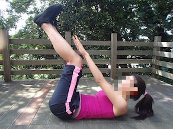
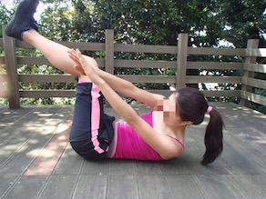
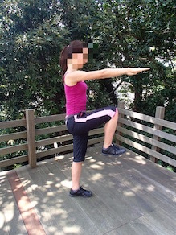

SEXYなくびれをGetする！ Part5
ツイストダイアゴナル(斜め曲げ)・アンクルタッチ

1. 床で仰向けになり、両膝を９０度にまげて太ももを床と垂直に上げる。両腕を膝に伸ばし三角形をつくる。

2. 膝の位置は固定して、対角の外くるぶしにタッチする気持ちで上体をひねり起こし戻る。
スクイーズ・ニーレズ

1. 両脚を腰幅に開いてまっすぐ立ち、両腕を肩幅でまっすぐ前に伸ばす。鼻から息を吸い、口から吐き、腰椎を曲げずにお腹をへこませてしぼむ。

2. その姿勢を保ち、左右交互に腕をつけるつもりで、膝を高く引き上げる。
スクイーズ・バードドック

1. 手を肩、膝を股関節の真下について四つん這いに。対角の肘と膝を近づけ、鼻から息を吸い、口から吐き腰椎を曲げずにお腹を凹ませてしぼむ。

2. 骨盤と両肩を床に平行に保ち、近づいた手足を対角に伸ばす、左右変えて